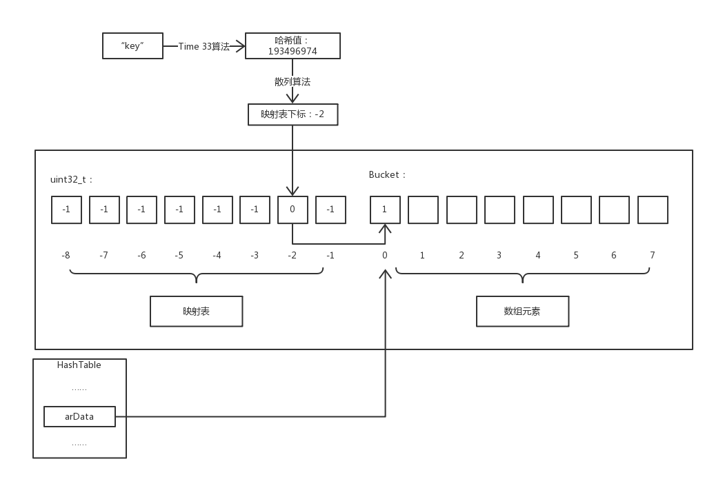
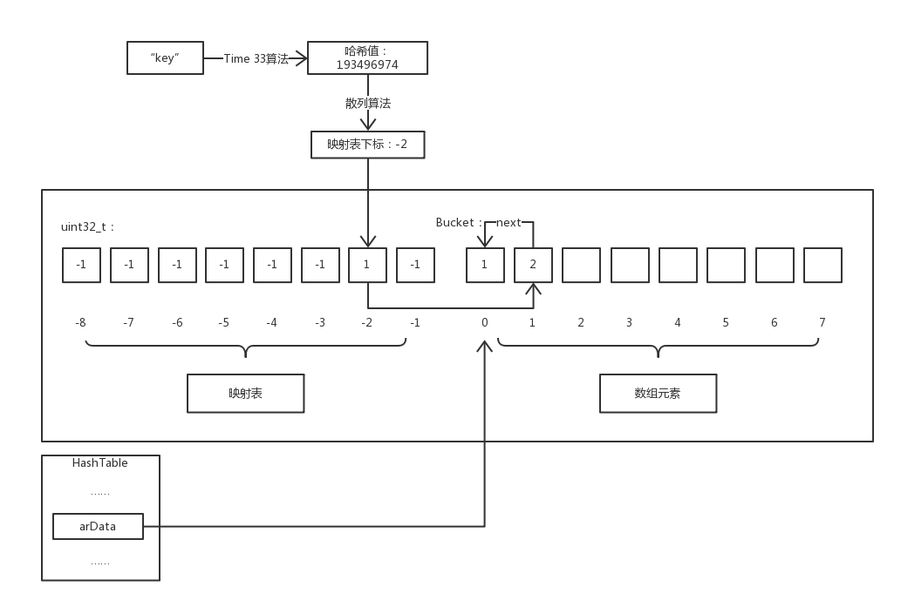

0x00 前言
最近在看《PHP 内核剖析》，关于 PHP 数组方面有所得，特此撰文一篇总结记录 (∩_∩)。因为 PHP 的数组是很强大且很重要的数据类型，它既支持单纯的数组又支持键值对数组，其中键值对数组类似于 Go 语言的 map 但又保证了能够按顺序遍历，并且由于采用了哈希表实现能够保证基本查找时间复杂度为 O(1)。所以接下来让我们了解一下 PHP 数组的底层实现吧～
0x01 数组的结构
一个数组在 PHP 内核里是长什么样的呢？我们可以从 PHP 的源码里看到其结构如下：
1 | // 定义结构体别名为 HashTable |
nNumUsed和nNumOfElements的区别：nNumUsed指的是arData数组中已使用的Bucket数，因为数组在删除元素后只是将该元素Bucket对应值的类型设置为IS_UNDEF（因为如果每次删除元素都要将数组移动并重新索引太浪费时间），而nNumOfElements对应的是数组中真正的元素个数。nTableSize数组的容量，该值为 2 的幂次方。PHP 的数组是不定长度但 C 语言的数组定长的，为了实现 PHP 的不定长数组的功能，采用了「扩容」的机制，就是在每次插入元素的时候判断nTableSize是否足以储存。如果不足则重新申请 2 倍nTableSize大小的新数组，并将原数组复制过来（此时正是清除原数组中类型为IS_UNDEF元素的时机）并且重新索引。nNextFreeElement保存下一个可用数字索引，例如在 PHP 中$a[] = 1;这种用法将插入一个索引为nNextFreeElement的元素，然后nNextFreeElement自增 1。
_zend_array 这个结构先讲到这里，有些结构体成员的作用在下文会解释，不用紧张O(∩_∩)O哈哈~。下面来看看作为数组成员的 Bucket 结构：
1 | typedef struct _Bucket { |
0x01 数组访问
我们知道 PHP 数组是基于哈希表实现的，而与一般哈希表不同的是 PHP 的数组还实现了元素的有序性，就是插入的元素从内存上来看是连续的而不是乱序的，为了实现这个有序性 PHP 采用了「映射表」技术。下面就通过图例说明我们是如何访问 PHP 数组的元素 :-D。

注意：因为键名到映射表下标经过了两次散列运算，为了区分本文用哈希特指第一次散列，散列即为第二次散列。
由图可知，映射表和数组元素在同一片连续的内存中，映射表是一个长度与存储元素相同的整型数组，它默认值为 -1 ，有效值为 Bucket 数组的下标。而 HashTable->arData 指向的是这片内存中 Bucket 数组的第一个元素。
举个例子 $a['key'] 访问数组 $a 中键名为 key 的成员，流程介绍：首先通过 Time 33 算法计算出 key 的哈希值，然后通过散列算法计算出该哈希值对应的映射表下标，因为映射表中保存的值就是 Bucket 数组中的下标值，所以就能获取到 Bucket 数组中对应的元素。
现在我们来聊一下散列算法，就是通过键名的哈希值映射到「映射表」的下标的算法。其实很简单就一行代码：
1 | nIndex = h | ht->nTableMask; |
将哈希值和 nTableMask 进行或运算即可得出映射表的下标，其中 nTableMask 数值为 nTableSize 的负数。并且由于 nTableSize 的值为 2 的幂次方，所以 h | ht->nTableMask 的取值范围在 [-nTableSize, -1] 之间，正好在映射表的下标范围内。至于为何不用简单的「取余」运算而是费尽周折的采用「按位或」运算？因为「按位或」运算的速度要比「取余」运算要快很多，我觉得对于这种频繁使用的操作来说，复杂一点的实现带来的时间上的优化是值得的。
散列冲突
不同键名的哈希值通过散列计算得到的「映射表」下标有可能相同，此时便发生了散列冲突。对于这种情况 PHP 使用了「链地址法」解决。下图是访问发生散列冲突的元素的情况：

这看似与第一张图差不多，但我们同样访问 $a['key'] 的过程多了一些步骤。首先通过散列运算得出映射表下标为 -2 ，然后访问映射表发现其内容指向 arData 数组下标为 1 的元素。此时我们将该元素的 key 和要访问的键名相比较，发现两者并不相等，则该元素并非我们所想访问的元素，而元素的 val.u2.next 保存的值正是下一个具有相同散列值的元素对应 arData 数组的下标，所以我们可以不断通过 next 的值遍历直到找到键名相同的元素或查找失败。
0x02 插入元素
插入元素的函数 _zend_hash_add_or_update_i ，基于 PHP 7.2.9 的代码如下：
1 | static zend_always_inline zval *_zend_hash_add_or_update_i(HashTable *ht, zend_string *key, zval *pData, uint32_t flag ZEND_FILE_LINE_DC) |
0x03 扩容
前面将数组结构的时候我们有提到扩容，而在插入元素的代码里有这样一个宏 ZEND_HASH_IF_FULL_DO_RESIZE，这个宏其实就是调用了 zend_hash_do_resize 函数，对数组进行扩容并重新索引。注意：并非每次 Bucket 数组满了都需要扩容，如果 Bucket 数组中 IS_UNDEF 元素的数量占较大比例，就直接将 IS_UNDEF 元素删除并重新索引，以此节省内存。下面我们看看 zend_hash_do_resize 函数：
1 | static void ZEND_FASTCALL zend_hash_do_resize(HashTable *ht) |
重新索引的逻辑在 zend_hash_rehash 函数中，代码如下：
1 | ZEND_API int ZEND_FASTCALL zend_hash_rehash(HashTable *ht) |
0x04 总结
嗯哼，本文就到此结束了，因为自身水平原因不能解释的十分详尽清楚。这算是我写过最难写的内容了，写完之后似乎觉得这篇文章就我自己能看明白/(ㄒoㄒ)/~~因为文笔太辣鸡。想起一句话「如果你不能简单地解释一样东西，说明你没真正理解它。」PHP 的源码里有很多细节和实现我都不算熟悉，这篇文章只是一个我的 PHP 底层学习的开篇，希望以后能够写出真正深入浅出的好文章。